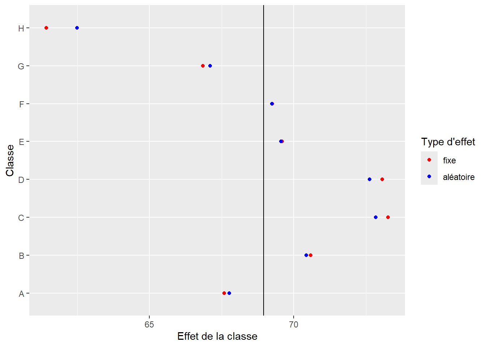

9 Régressions à effets mixtes (GLMM)
Dans les deux chapitres précédents, nous avons consécutivement présenté la méthode de la régression linéaire multiple (LM) ainsi qu’une de ses extensions, soit les modèles linéaires généralisés (GLM). Dans ce chapitre, nous poursuivons sur cette voie avec une nouvelle extension : les modèles généralisés à effet mixtes (GLMM). À la fin de cette section, vous serez en mesure de :
- comprendre la distinction entre un modèle GLM et un modèle GLMM;
- distinguer un effet fixe d’un effet aléatoire;
- formuler des modèles GLMM avec des constantes et/ou des pentes aléatoires;
- effectuer les diagnostics d’un GLMM.
Liste des packages utilisés dans ce chapitre
- Pour créer des graphiques :
-
ggplot2, le seul, l’unique! -
ggpubrpour combiner des graphiques et réaliser des diagrammes. -
ellipsepour représenter des ellipses sur certains graphiques.
-
- Pour ajuster des modèles GLMM :
-
lme4, offrant une interface simple pour ajuster des GLMM.
-
- Pour analyser des modèles GLM :
-
car, essentiellement pour la fonctionvif. -
DHARMapour le diagnostic des résidus simulés. -
merToolspour explorer les résultats d’un GLMM. -
lmerTestpour obtenir des tests de significativité pour les coefficients d’un GLMM. -
MuMinpour calculer les R2 conditionnel et marginal. -
performancepour calculer l’ICC et d’autres mesures d’ajustement.
-
9.1 Introduction
9.1.1 Indépendance des observations et effets de groupes
Nous avons vu dans les précédents chapitres que l’indépendance des observations est une condition d’application commune à l’ensemble des modèles de régression. Cette condition implique ainsi que chaque unité d’observation de notre jeu de données est indépendante des autres; en d’autres termes, qu’elle ne soit associée à aucune autre observation par un lien de dépendance. Prenons un exemple concret pour illustrer cette notion. Admettons que nous nous intéressons à la performance scolaire d’élèves du secondaire à Montréal. Pour cela, nous collectons la moyenne des résultats aux examens du ministère de tous les élèves des différentes commissions scolaires de l’île de Montréal. Chaque élève appartient à une classe spécifique, et chaque classe se situe dans une école spécifique. Les classes constituent des environnements particuliers, la performance des élèves y est influencée par un ensemble de facteurs comme la personne qui enseigne et les relations entre les élèves d’une même classe. Deux élèves provenant d’une même classe sont donc lié(e)s par une forme de structure propre à leur classe et ne peuvent pas être considéré(e)s comme indépendant(e)s. De même, l’école constitue un environnement particulier pouvant influencer la performance des élèves du fait de moyens financiers plus importants, de la mise en place de programmes spéciaux, de la qualité des infrastructures (bâtiment, gymnase, cour d’école) ou d’une localisation minimisant certaines nuisances à l’apprentissage comme le bruit. À nouveau, deux élèves provenant d’une même école partagent une forme de structure qui, cette fois-ci, est propre à leur école. Si nous collectons des données pour l’ensemble du Canada, nous pourrions étendre ce raisonnement aux villes dans lesquelles les écoles se situent et aux provinces.
Dans cet exemple, la dépendance entre les données est provoquée par un effet de groupe : il est possible de rassembler les observations dans des ensembles (classes et écoles) influençant vraisemblablement la variable étudiée (performance scolaire). Les effets des classes et des écoles ne sont cependant pas intrinsèques aux élèves. En effet, il est possible de changer un ou une élève de classe ou d’école, mais pas de changer son âge ou sa situation familiale. Il est ainsi possible de distinguer la population des élèves, la population des classes, et la population des écoles (figure fig-glmmecoles). Ces effets de groupes sont plus la règle que l’exception dans l’analyse de données en sciences sociales, ce qui met à mal l’hypothèse d’indépendance des observations. Notez que les effets de groupes ne sont pas les seules formes de structures remettant en cause l’indépendance des observations. Il existe également des structures temporelles (deux observations proches dans le temps ont plus de chances de se ressembler) et spatiales (deux observations proches dans l’espace ont plus de chances de se ressembler); cependant, les cas de la dépendance temporelle et spatiale ne sont pas couverts dans ce livre, car ils sont complexes et méritent un ouvrage dédié.
La notion de pseudo-réplication
Les effets de dépendance causés par des structures de groupe, temporelles ou spatiales, sont regroupés sous le terme de pseudo-réplication. Il est intéressant de se pencher sur la signification de ce mot pour comprendre le problème intrinsèque causé par la dépendance entre les observations et son influence sur l’inférence.
Reprenons l’exemple des élèves et de la performance scolaire et admettons que nous souhaitons estimer la moyenne générale de l’ensemble des élèves sur l’île de Montréal, mais que nous ne disposons pas du jeu de données complet. Nous devons donc collecter un échantillon suffisamment grand pour estimer la moyenne pour l’ensemble de cette population. Raisonnons en termes de quantité d’informations. Si nous ne disposons d’aucune observation (nous n’avons pas encore interrogé d’élèves), cette quantité est de 0. Si nous interrogeons un premier ou une première élève, nous obtenons une donnée supplémentaire, et donc un point d’information supplémentaire (+1). Admettons maintenant que nous collectons 30 observations dans une école, 10 dans une seconde et 5 dans une troisième. A priori, nous pourrions dire que nous avons ajouté 45 points d’information à notre total de connaissance. Ce serait le cas si les observations étaient indépendantes les unes des autres. Dans un tel contexte, chaque observation ajoute la même quantité d’information. Cependant, puisque les personnes étudiant dans la même école ont plus de chance de se ressembler, interroger les élèves d’une même école apporte moins d’information. Notez que plus la ressemblance entre les élèves d’une même école est forte, plus la quantité d’information est réduite. Nous sommes donc loin de disposer d’une quantité d’information égale à 45. Chaque réplication de l’expérience (demander à un ou une élève sa moyenne annuelle) n’apporte pas autant d’information qu’attendu si les observations étaient indépendantes, c’est pourquoi on parle de pseudo-réplication.
La pseudo-réplication influence directement l’inférence statistique puisque le calcul des différents tests statistiques assume que chaque observation apporte autant d’information que les autres. En cas de présence de pseudo-réplication, la quantité d’information présente dans l’échantillon est plus petite qu’attendu. Il est possible de voir cela comme une forme de surestimation de la taille de l’échantillon. En cas de pseudo-réplication, nous disposons en réalité de moins de données que ce que l’on attendrait d’un échantillon de cette taille, si les observations étaient indépendantes. La conséquence est la sous-estimation de la variabilité réelle des données et l’augmentation des risques de trouver des effets significatifs dans l’échantillon alors qu’ils ne le sont pas pour l’ensemble de la population.
9.1.2 Terminologie : effets fixes et effets aléatoires
Puisque les effets des classes et des écoles ne sont pas propres aux élèves, il convient de les introduire différemment dans les modèles de régression. Nous appelons un effet fixe, un effet qui est propre aux observations que nous étudions et un effet aléatoire, un effet provoqué par une structure externe (effet de groupe, effet temporel et/ou effet spatial). Un modèle combinant à la fois des effets fixes et des effets aléatoires est appelé un modèle à effets mixtes, ou GLMM pour Generalized Linear Mixed Model. Tous les modèles que nous avons ajustés dans les sections précédentes ne comprenaient que des effets fixes alors qu’à plusieurs reprises, des effets aléatoires induits par l’existence de structure de groupe auraient pu (dû) être utilisés. Prenons pour exemple le modèle logistique binomial visant à prédire la probabilité d’utiliser le vélo comme mode de transport pour son trajet le plus fréquent. La variable multinomiale Pays, représentant le pays dans lequel les personnes interrogées résident, a été introduite comme un effet fixe. Cependant, l’effet du pays ne constitue pas une caractéristique propre aux individus; il s’agit plutôt d’un agrégat complexe mêlant culture, météorologie, politiques publiques et formes urbaines. À l’inverse, le sexe ou l’âge sont bien des caractéristiques intrinsèques des individus et peuvent être considérés comme des effets fixes.
Notez que l’utilisation du terme effet aléatoire peut porter à confusion, car il est utilisé différemment en fonction du champ d’études. Parmi les différentes définitions relevées par Gelman (2005) d’un effet aléatoire, citons les suivantes :
Les effets fixes sont identiques pour tous les individus, alors que les effets aléatoires varient (définition 1).
Les effets sont fixes s’ils sont intéressants en eux-mêmes, et les effets sont aléatoires si nous nous intéressons à la population dont ils sont issus (définition 2).
Lorsqu’un échantillon couvre une grande part de la population, la variable correspondante est un effet fixe. Si l’échantillon couvre une faible part de la population, l’effet est aléatoire (définition 3).
Si l’effet est censé provenir d’une variable aléatoire, alors il s’agit d’un effet aléatoire (définition 4).
Les effets fixes sont estimés par la méthode des moindres carrés ou par le maximum de vraisemblance, alors que les effets aléatoires sont estimés avec régularisation (shrinkage) (définition 5).
Il est ainsi possible de se retrouver dans des cas où un effet serait classé comme fixe selon une définition et aléatoire selon une autre. La deuxième définition suppose même qu’un effet peut être aléatoire ou fixe selon l’objectif de l’étude. La dernière définition a l’avantage d’être mathématique, mais ne permet pas de décider si un effet doit être traité comme aléatoire ou fixe. Nous ne proposons pas ici de clore le débat, mais plutôt de donner quelques pistes de réflexion pour décider si un effet doit être modélisé comme fixe ou aléatoire:
Est-ce que l’effet en question est propre aux individus étudiés ou est externe aux individus? S’il est propre aux individus, il s’agit plus certainement d’un effet fixe. À titre d’exemple, il n’est pas possible de changer l’âge d’une personne, mais il est certainement possible de changer de ville de résidence.
Existe-t-il un nombre bien arrêté de catégories possibles pour l’effet en question? Si oui, il s’agit plus certainement d’un effet fixe. Il y a un nombre bien arrêté de catégories pour la variable sexe, mais pour la variable pays, de nombreuses autres valeurs peuvent être ajoutées. Il est également possible de se demander s’il semble cohérent d’effectuer un échantillonnage sur les catégories en question. Dans le cas des pays, nous pourrions mener une étude à l’échelle des pays et collecter des données sur un échantillon de l’ensemble des pays. Il existe donc une population de pays, ce que nous ne pouvons pas affirmer pour la variable sexe.
L’effet en question est direct ou indirect? Dans le second cas, l’effet en question est un agglomérat complexe découlant de plusieurs processus n’ayant pas été mesurés directement, ce qui correspond davantage à un effet aléatoire. Ainsi, l’effet du pays de résidence des individus sur leur probabilité d’utiliser le vélo est bien une agglomération complexe d’effets (culture, météorologie, orientation des politiques publiques, formes urbaines, etc.) n’ayant pas tous été mesurés. À l’inverse, l’âge d’un individu a bien un effet direct sur sa probabilité d’utiliser le vélo.
L’effet est-il le même pour tous les individus, ou doit-il varier selon le groupe dans lequel l’individu se situe? Si un effet doit varier en fonction d’un groupe, il s’apparente davantage à un effet aléatoire. Pour reprendre l’exemple de l’âge, nous pourrions décider que cette caractéristique des individus n’a peut-être pas le même effet en fonction du pays dans lequel vit l’individu et l’ajouter au modèle comme un effet aléatoire.
Vous comprendrez donc qu’une partie non négligeable du choix entre effet fixe ou effet aléatoire réside dans le cadre théorique à l’origine du modèle. Maintenant que cette distinction conceptuelle a été détaillée, nous pouvons passer à la présentation statistique des modèles GLMM.
9.2 Principes de base des GLMM
Un GLMM est donc un modèle GLM introduisant à la fois des effets fixes et des effets aléatoires. Si nous ne considérons que les effets de groupes, un GLMM peut avoir trois formes : constantes aléatoires, pentes aléatoires et constantes et pentes aléatoires. Nous présentons ici ces trois formes en reprenant l’exemple ci-dessus avec des élèves intégré(e)s dans des classes et pour lesquel(le)s le niveau de performance à l’examen ministériel de mathématique nous intéresse.
9.2.1 GLMM avec constantes aléatoires
Il s’agit de la forme la plus simple d’un GLMM. Plus spécifiquement, elle autorise le modèle à avoir une constante différente pour chaque catégorie d’une variable multinomiale. En d’autres termes, si nous reprenons l’exemple des élèves dans leurs classes, nous tentons d’ajouter dans le modèle l’idée que chaque classe a une moyenne différente en termes de performance à l’examen de mathématique. Il est assez facile de visualiser ce que cela signifie à l’aide d’un graphique. Admettons que nous modélisons la note obtenue par des élèves du secondaire à l’examen ministériel de mathématique à partir d’une autre variable continue représentant le temps de travail moyen par semaine en dehors des heures de classe et d’une variable catégorielle représentant dans quelle classe se trouve chaque élève. Notez qu’il ne s’agit pas ici de vraies données, mais de simples simulations utilisées à titre d’illustration. Si nous ne tenons pas compte des classes, nous pouvons ajuster une régression linéaire simple entre nos deux variables continues comme le propose la figure fig-randominter1.
Nous constatons que notre modèle semble bien identifier la relation positive entre le temps de travail et le niveau de performance, mais la droite de régression est très éloignée de chaque point; nous avons ainsi énormément d’erreurs de prédiction, et donc des résidus importants. Jusqu’ici, nous avons vu que nous pouvons ajouter un prédicteur et intégrer l’effet des classes comme un effet fixe (figure fig-randominter2).
Cet ajustement constitue une nette amélioration du modèle. Prenons un instant pour reformuler clairement notre modèle à effets fixes :
\[ \begin{aligned} &Y \sim Normal(\mu,\sigma)\\ &g(\mu) = \beta_0 + \beta_1 x_1 + \sum^k_{j=1}{\beta_j x_{2j}}\\ &g(x) = x \end{aligned} \tag{9.1}\]
avec \(x_1\) le temps de travail et \(x_2\) la classe ayant k-1 modalités (puisqu’une modalité est la référence). Nous ajustons ainsi un coefficient pour chaque classe, ce qui a pour effet de tirer vers le haut ou vers le bas la prédiction du modèle en fonction de la classe. Cet effet est pour l’instant fixe, mais nous avons déterminé dans les sections précédentes qu’il serait conceptuellement plus approprié de le traiter comme un effet aléatoire.
Passons à présent à la reformulation de ce modèle en transformant l’effet fixe de la classe en effet aléatoire.
\[ \begin{aligned} &Y \sim Normal(\mu,\sigma_e)\\ &g(\mu) = \beta_0 + \beta_1 x_1 + \upsilon \\ &\upsilon \sim Normal(0, \sigma_{\upsilon}) \\ &g(x) = x \end{aligned} \tag{9.2}\]
Remarquez que l’effet fixe de la classe \(\sum^k_{j=1}{\beta_j x_{2j}}\) a été remplacé par \(\upsilon\) qui est un terme aléatoire propre aux classes et qui suit une distribution normale centrée sur 0 (\(\upsilon \sim Normal(0, \sigma_{\upsilon})\)). En d’autres termes, cela signifie que l’effet des classes sur la performance des élèves suit une distribution normale et que si nous moyennons l’effet de toutes les classes, cet effet serait de 0. Nous ne modélisons donc plus l’effet moyen de chaque classe comme dans le modèle à effets fixes, mais la variabilité de l’effet des classes, soit \(\sigma_{\upsilon}\). Notre modèle a donc deux variances, une au niveau des élèves (\(\sigma_e\)) et une au niveau des classes (\(\sigma_{\upsilon}\)). Cette particularité explique souvent pourquoi ce type de modèle est appelé un modèle hiérarchique ou un modèle de partition de la variance. Cette information est particulièrement intéressante, car elle permet de calculer la part de la variance présente au niveau des élèves et celle au niveau des classes.
Selon cette formulation, les constantes propres à chaque classe sont issues d’une distribution normale (nous reviendrons d’ailleurs sur ce choix plus tard), mais elles n’apparaissent pas directement dans le modèle. Ces paramètres ne sont plus estimés directement dans le modèle, mais a posteriori à partir des prédictions du modèle, et sont appelés Best Linear Unbiased Predictor (BLUP). Ces dernières précisions devraient d’ailleurs mieux vous aider à comprendre l’origine des définitions 1, 2 et 4 que nous avons mentionnées précédemment.
En comparant les figures fig-randominter2 et fig-randominter3, la différence ne saute pas aux yeux; vous pourriez alors légitimement vous demander pourquoi tous ces efforts et cette complexité théorique pour une différence d’ajustement minime? Trois arguments permettent de justifier l’utilisation de constantes aléatoires plutôt que d’effets fixes dans notre cas.
9.2.1.1 Resserrement (shrinkage) et mutualisation (partial pooling)
Le premier intérêt d’utiliser un effet aléatoire réside dans sa méthode d’estimation qui diffère largement d’un effet fixe. Il est assez facile de se représenter intuitivement la différence entre les deux. Dans le cas de nos élèves et de nos classes, lorsque l’effet des classes est estimé avec un effet fixe, l’effet de chaque classe est déterminé de façon totalement indépendante des autres classes. En d’autres termes, il n’est possible d’en apprendre plus sur une classe qu’en collectant des données dans cette classe (separate pooling). Si l’effet des classes est estimé comme un effet aléatoire, alors l’information entre les classes est mutualisée (partial pooling). L’idée étant que l’information que nous apprenons sur des élèves dans une classe est au moins en partie valide dans les autres classes. Cette méthode d’estimation est particulièrement intéressante si nous ne disposons que de peu d’observations dans certaines classes, puisque nous pouvons apprendre au moins une partie de l’effet de cette classe à partir des données des autres classes. Cela n’est pas possible dans le cas d’un effet fixe où l’on traite chaque classe en silo. McElreath (2020) écrit à ce sujet qu’un effet fixe « n’a pas de mémoire » et qu’il oublie tout ce qu’il a appris sur les classes lorsqu’il passe à une nouvelle classe. La conséquence de cette mutualisation de l’information est un resserrement (shrinkage) des effets des classes autour de leur moyenne. Cela signifie que les tailles des effets de chaque classe sont plus petites dans le cas d’un effet aléatoire que d’un effet fixe. Utiliser des effets aléatoires conduit donc à une estimation plus conservatrice de l’effet des classes. Nous pouvons le visualiser en comparant les effets de classes dans le modèle à effets mixtes et le modèle à effets fixes. La figure fig-randominter5 montre clairement que les effets aléatoires tendent à se rapprocher (resserrement) de leur moyenne (ligne noire), et donc à identifier des effets moins extrêmes pour chaque classe. Cette explication est directement en lien avec la définition 5 d’un effet aléatoire vu précédemment.

9.2.1.2 Prédiction pour de nouveaux groupes
Une autre retombée directe de la mutualisation de l’information est la capacité du modèle à envisager les effets plausibles pour de nouvelles classes. En effet, puisque nous avons approximé l’effet des classes sous forme d’une distribution normale dont nous connaissons la moyenne (0) et l’écart-type (\(\sigma_{\upsilon}\)), nous pouvons simuler des données pour de nouvelles classes, ce que ne permet pas un effet fixe. Ce constat est d’ailleurs directement lié à la définition 3 des effets aléatoires vue précédemment. Dans notre cas, \(\sigma_{\upsilon}\) = 3,542, ce qui nous permet d’affirmer que dans 95 % des classes, l’effet de la classe sur la performance scolaire doit se trouver entre -1,96 \(\times\) 3,542 et +1,96 \(\times\) 3,542, soit l’intervalle [-6,942, 6,942].
9.2.1.3 Partition de la variance
Un autre avantage net de l’effet aléatoire est l’estimation du paramètre \(\sigma_{\upsilon}\), soit la variance au niveau des écoles. Ce dernier permet de calculer un indicateur très intéressant, soit le coefficient de corrélation intraclasse (ICC) :
\[ ICC = \frac{\sigma_{\upsilon}}{\sigma_{\upsilon} + \sigma_{e}} \tag{9.3}\]
Il s’agit donc du pourcentage de la variance présente au niveau des classes, qui peut être interprétée comme le niveau de corrélation (de ressemblance) entre les élèves d’une même classe.
Dans notre cas, l’écart-type est de 3,542 au niveau des classes et de 7,734 au niveau des élèves. Nous pouvons donc calculer l’ICC au niveau des classes avec la formule précédente : 3,542 / (3,542 + 7,734) = 0,314. Cela signifie que le niveau de corrélation entre deux élèves d’une même classe est de 0,314 ou encore que 31,4 % de la variance de Y se situe au niveau des classes, ce qui est conséquent. Une telle information ne peut être extraite d’un modèle avec uniquement des effets fixes. Notez ici que l’ICC peut être calculé pour chaque niveau d’un modèle à effet mixte. Dans notre exemple, nous n’avons qu’un seul niveau au-dessus des élèves, soit les classes, mais nous pourrions étendre cette logique à des écoles, par exemple. Notez également que cette formule de l’ICC n’est valide que pour un modèle pour lequel la distribution de la variable Y est normale. Des développements apparaissent pour proposer d’autres formulations adaptées à d’autres distributions, mais il est également possible d’estimer l’ICC à partir des simulations issues du modèle (Nakagawa, Johnson et Schielzeth 2017; Aly et al. 2014; Stryhn et al. 2006; Wu, Crespi et Wong 2012). L’idée générale reste d’expliquer la partition de la variance dans le modèle.
En plus de l’ICC, il est également possible de calculer les R2 marginal et conditionnel du modèle. Le premier représente la variance expliquée par le modèle si seulement les effets fixes sont pris en compte, et le second si les effets fixes et aléatoires sont pris en compte. Distinguer les deux sources d’information permet de mieux cerner l’importance du rôle des écoles dans la performance des élèves. Dans notre cas, nous obtenons un R2 marginal de 0,115 et un R2 conditionnel de 0,269, ce qui nous confirme à nouveau que le rôle joué par la classe dans le niveau de performance est loin d’être négligeable.
9.2.2 GLMM avec pentes aléatoires
Dans cette seconde version du GLMM, nous n’envisageons plus de faire varier une constante en fonction des classes, mais un coefficient en fonction des classes. Admettons que nous voulons tester ici si l’effet du temps de travail (\(x_1\)) sur la performance scolaire (Y) n’est pas constant partout. En d’autres termes, nous supposons que, dans certaines classes, le temps de travail hebdomadaire en dehors de l’école est plus ou moins efficace que d’autres classes. L’idée sous-jacente est que nous n’observons pas de différence en termes de moyenne entre deux classes, mais en termes d’effet pour notre variable \(x_1\). À nouveau, nous pouvons nous contenter d’un effet fixe pour intégrer cette idée dans notre modèle. Pour cela, nous avons simplement à ajouter une interaction entre notre variable quantitative temps de travail et notre variable qualitative classe. Nous obtenons le résultat décrit par la figure fig-randomslope. Notez ici que la constante est bien la même pour chaque classe (les lignes s’intersectent à 0 sur l’axe des x), et que seule la pente change.
La formulation de ce modèle à effets fixes seulement est la suivante :
\[ \begin{aligned} &Y \sim Normal(\mu,\sigma)\\ &g(\mu) = \beta_0 + \beta_1 x_1 + \sum^k_{j=1}{\beta_j x_{2j} x_1}\\ &g(x) = x \end{aligned} \tag{9.4}\]
Nous constatons donc que nous avons un effet principal \(\beta_1\) décrivant le lien entre le temps de travail et la note obtenue à l’examen pour l’ensemble des élèves, ainsi qu’un bonus ou un malus sur cet effet \(\beta_j\) s’appliquant en fonction de la classe. Nous pouvons reformuler ce modèle pour inclure cet effet spécifique par classe comme un effet aléatoire :
\[ \begin{aligned} &Y \sim Normal(\mu,\sigma_e)\\ &g(\mu) = \beta_0 + \beta_1 x_1 + \upsilon x_1 \\ &\upsilon \sim Normal(0,\sigma_{\upsilon})\\ &g(x) = x \end{aligned} \tag{9.5}\]
Nous formulons ici un modèle dans lequel la classe modifie l’effet de la variable temps d’étude sur la variable note à l’examen. L’effet moyen de \(x_1\) (propre aux individus) est capté par le coefficient \(\beta_1\), les bonus ou malus ajoutés à cet effet par la classe sont issus d’une distribution normale centrée sur 0 avec un écart-type, soit \(\sigma_{\upsilon}\). À nouveau, l’idée est que si nous moyennons l’effet de toutes les classes, nous obtenons 0. Aussi, le fait de modéliser cet effet comme un effet aléatoire nous permet de partitionner la variance, de mutualiser l’information entre les classes et de resserrer l’estimation des effets des classes.
Les résultats pour ce second modèle sont présentés à la figure fig-randomslope2, et une comparaison entre les estimations des effets fixes et des effets aléatoires est présentée à la figure fig-randomslope3. Nous pouvons ainsi constater à nouveau l’effet de resserrement provoqué par l’effet aléatoire.
Lorsque nous intégrons des pentes aléatoires dans un modèle, nous faisons face au problème suivant : la variance associée aux pentes aléatoires n’est pas fixe, mais proportionnelle à la variable X autorisée à varier. Si nous comparons la figure fig-randominter3 (constantes aléatoires) et la figure fig-randomslope2 (pentes aléatoires), nous constatons bien que la dispersion des prédictions du modèle (représentées par les lignes) augmente dans le cas de pentes aléatoires et reste identique dans le cas des constantes aléatoires. La conséquence pratique est qu’il existe un nombre infini de valeurs possibles pour l’ICC. Dans ce contexte, il est préférable de laisser de côté cet indicateur et de ne reporter que les R2 marginal et conditionnel. Dans notre cas, nous obtenons les valeurs 0,109 et 0,258, ce qui confirme une fois encore que le rôle joué par la classe est loin d’être négligeable.
9.2.3 GLMM avec constantes et pentes aléatoires
Vous l’aurez certainement deviné en lisant le titre de cette section : il est tout à fait possible de combiner à la fois des constantes et des pentes aléatoires dans un modèle. Cela augmente bien sûr la complexité du modèle et introduit quelques subtilités comme la notion de distribution normale multivariée, mais chaque chose en son temps.
Si nous reprenons notre exemple avec nos élèves et nos classes, combiner à la fois des constantes et des pentes aléatoires revient à formuler l’hypothèse que chaque classe a un effet sur la moyenne de la performance de ses élèves, mais également un effet sur l’efficacité du temps de travail. Il est possible de créer un modèle avec uniquement des effets fixes tenant compte de ces deux aspects en ajoutant dans le modèle la variable multinomiale classe ainsi que son interaction avec la variable temps de travail. La formulation de ce modèle à effets fixes est la suivante :
\[ \begin{aligned} &Y \sim Normal(\mu,\sigma)\\ &g(\mu) = \beta_0 + \beta_1 x_1 + \sum^k_{j=1}{\beta_{2j} x_{2j} + \beta_{3j} x_{2j} x_1}\\ &g(x) = x \end{aligned} \tag{9.6}\]
Nous pouvons représenter les résultats de ce modèle avec la figure fig-fullrandom1.
Nous reformulons à présent ce modèle pour intégrer l’effet moyen de chaque classe (constante) et l’effet des classes sur l’efficacité du temps de travail (pente) comme deux effets aléatoires :
\[ \begin{aligned} &Y \sim Normal(\mu,\sigma)\\ &g(\mu) = \beta_0 + \upsilon_1 + (\beta_1 + \upsilon_2) x_1\\ &\left(\begin{array}{l} \upsilon_{1} \\ \upsilon_{2} \end{array}\right) \sim \mathcal{N}\left(\left(\begin{array}{l} 0 \\ 0 \end{array}\right),\left(\begin{array}{cc} \sigma_{\upsilon_1} & \sigma_{\upsilon_1\upsilon_2} \\ \sigma_{\upsilon_1\upsilon_2} & \sigma_{\upsilon_1} \end{array}\right)\right) \\ &g(x) = x \end{aligned} \tag{9.7}\]
Pas de panique! Cette écriture peut être interprétée de la façon suivante :
Le modèle a deux effets aléatoires, l’un faisant varier la constante en fonction de la classe (\(\upsilon_1\)) et l’autre l’effet de la classe sur l’efficacité du temps de travail (\(\upsilon_2\)). Ces deux effets sont issus d’une distribution normale bivariée (une dimension par effet aléatoire). Cette distribution normale bivariée a donc deux moyennes et ces deux moyennes sont à 0 (les effets s’annulent si nous considérons toutes les classes ensemble). Elle dispose également d’une variance par effet aléatoire (\(\sigma_{\upsilon_1}\) et \(\sigma_{\upsilon_2}\)) et d’une covariance entre les deux effets aléatoires (\(\sigma_{\upsilon_1\upsilon_2}\)). Cette covariance permet de tenir compte du fait que, potentiellement, les classes avec une constante plus élevée pourraient systématiquement avoir une efficacité du temps de travail plus faible ou plus élevée. Cette formulation implique donc d’ajuster trois paramètres de variance : \(\sigma_{\upsilon_1}\), \(\sigma_{\upsilon_2}\) et \(\sigma_{\upsilon_1\upsilon_2}\). Il peut arriver que nous n’ayons pas assez de données pour estimer ces trois paramètres, ou que nous décidions, pour des raisons théoriques, qu’aucune corrélation ne soit attendue entre \(\sigma_{\upsilon_1}\) et \(\sigma_{\upsilon_2}\). Dans ce cas, il est possible de fixer \(\sigma_{\upsilon_1\upsilon_2}\) à 0, ce qui revient à indiquer au modèle que \(\upsilon_1\) et \(\upsilon_2\) proviennent de deux distributions normales distinctes, nous pouvons donc écrire :
\[ \begin{aligned} &Y \sim Normal(\mu,\sigma)\\ &g(\mu) = \beta_0 + \upsilon_1 + (\beta_1 + \upsilon_2) x_1\\ &\left(\begin{array}{l} \upsilon_{1} \\ \upsilon_{2} \end{array}\right) \sim \mathcal{N}\left(\left(\begin{array}{l} 0 \\ 0 \end{array}\right),\left(\begin{array}{cc} \sigma_{\upsilon_1} & 0 \\ 0 & \sigma_{\upsilon_1} \end{array}\right)\right) \\ &g(x) = x \end{aligned} \tag{9.8}\]
Ce qui est identique à :
\[ \begin{aligned} &Y \sim Normal(\mu,\sigma)\\ &g(\mu) = \beta_0 + \upsilon_1 + (\beta_1 + \upsilon_2) x_1\\ &\upsilon_{1} \sim Normal(0,\sigma_{\upsilon_1}) \\ &\upsilon_{2} \sim Normal(0,\sigma_{\upsilon_2}) \\ &g(x) = x \end{aligned} \tag{9.9}\]
Nous avons déjà abordé la notion de covariance dans la section sec-042. Pour rappel, la covariance dépend de l’unité de base des deux variables sur laquelle elle est calculée. Ici, il s’agit d’un coefficient et d’une constante. Il est donc préférable de la standardiser pour obtenir la corrélation entre les deux effets :
\[ corr(\upsilon_1;\upsilon_2) = \frac{\sigma_{\upsilon_1\upsilon_2}}{\sqrt{\sigma_{\upsilon_1}}\sqrt{\sigma_{\upsilon_2}}} \tag{9.10}\]
Si cette corrélation est positive, cela signifie que les classes ayant tendance à avoir un effet positif sur la performance scolaire ont également tendance à influencer positivement l’efficacité du temps de travail. À l’inverse, une corrélation négative signifie que l’efficacité du temps de travail a tendance à être plus faible dans les classes où la performance scolaire moyenne est élevée. Si la corrélation n’est pas significative, c’est que les deux effets sont indépendants l’un de l’autre.
Pour cet exemple, nous conservons la première formulation afin de montrer comment interpréter \(\sigma_{\upsilon_1\upsilon_2}\), mais nous ne disposons probablement pas de suffisamment de classes différentes pour estimer correctement ces trois paramètres. Les résultats de ce modèle sont représentés à la figure fig-fullrandom2.
Nous pouvons ainsi constater que pour ce troisième modèle, l’effet de resserrement est bien plus prononcé que pour les modèles précédents (figure fig-fullrandom3). Si nous nous fions au modèle à effets fixes (figure fig-fullrandom1)), alors l’effet de l’école sur l’efficacité du temps de travail est très important. En revanche, le modèle à effet aléatoire identifie que la différence de moyenne entre les écoles est importante, mais la différence en termes d’efficacité du temps de travail est beaucoup plus anecdotique.
Notre modèle estime les valeurs de \(\sigma_{\upsilon_1}\) à 8,563, de \(\sigma_{\upsilon_2}\) à 0,042 et de \(\sigma_{\upsilon_1\upsilon_2}\) à 0,073. La corrélation entre les deux effets est donc de 0,122, ce qui est relativement faible (pour l’anecdote, notez que la valeur originale de corrélation entre ces deux effets était de 0,1 lorsque nous avons simulé ces données, notre modèle a donc bien été capable de retrouver le paramètre original). À nouveau, puisque nous avons des pentes aléatoires dans ce modèle, nous ne pouvons pas calculer l’ICC; nous pouvons cependant rapporter les R2 marginal et conditionnel. Leurs valeurs respectives sont 0,115 et 0,269, ce qui nous confirme une nouvelle fois que l’ajout d’effets aléatoires contribue à expliquer une partie importante de la variance de la performance scolaire.
Pour terminer cette section, comparons brièvement les trois modèles (constantes aléatoires, pentes aléatoires, constantes et pentes aléatoires) pour déterminer lequel est le mieux ajusté à nos données. Nous ajoutons également un quatrième modèle dans lequel les deux effets aléatoires sont présents, mais non corrélés (\(\sigma_{\upsilon_1\upsilon_2}=0\)). Le tableau tbl-fullrandom4 nous permet de constater que l’ajout des constantes aléatoires joue un rôle essentiel dans le premier modèle : le R2 conditionnel est plus que deux fois supérieur au R2 marginal. Cependant, l’ajout des pentes aléatoires dans les trois autres modèles apporte finalement très peu d’information, nous laissant penser que l’effet de la classe sur le temps de travail est faible, voire inexistant.
| modèle | AIC | R2 marginal | R2 conditionnel |
|---|---|---|---|
| Constantes aléatoires | 2 100,9 | 0,12 | 0,27 |
| Pentes aléatoires | 2 101,6 | 0,11 | 0,26 |
| Pentes et constantes aléatoires corrélées | 2 104,7 | 0,11 | 0,27 |
| Pentes et constantes aléatoires non corrélées | 2 102,7 | 0,11 | 0,27 |
Modèles à effets mixtes avec des structures croisées
Jusqu’à présent, nous avons abordé des modèles GLMM comprenant des structures imbriquées (nested en anglais), c’est-à-dire qu’une observation d’un niveau 1 est incluse dans un et un seul groupe du niveau 2. Comme structure imbriquée à trois niveaux, nous avons vu comme exemple des élèves intégrés dans des classes elles-mêmes intégrées dans des écoles (figure fig-glmmecoles) : un ou une élève appartient à une et une seule classe qui est elle-même localisée dans une et une seule école (élève / classe / école).
Notez qu’il est aussi possible d’avoir des structures des données croisées (crossed).
Admettons à présent que nous ne nous intéressons pas à la classe dans laquelle se situe l’élève, mais plutôt à la personne qui enseigne. Admettons également que ces personnes peuvent donner des cours dans plusieurs écoles. Nous nous retrouvons dans un cas de figure où une personne qui enseigne peut se situer dans plusieurs écoles, ce qui diffère du cas précédent où chaque classe appartient à une seule école. Dans ce second cas, on parle d’une structure croisée plutôt qu’imbriquée.
Si les personnes enseignent dans toutes les écoles, il est possible de dire que le design d’étude est croisé complet ou croisé partiel si elles n’enseignent que dans certaines écoles. La figure fig-crossednested résume ces trois situations.

Il est important de bien saisir la structure de son jeu de données, car l’estimation d’un modèle avec effets imbriqués ou croisés peut donner des résultats parfois significativement différents. De plus, un modèle imbriqué est généralement moins difficile à ajuster qu’un modèle croisé. En effet, dans un modèle imbriqué, deux personnes étudiant dans deux écoles différentes sont jugées indépendantes. Dans un modèle croisé, deux élèves provenant de deux écoles différentes peuvent tout de même partager une dépendance du fait qu’ils ou elles ont pu avoir le même professeur ou la même professeure. La structure de dépendance (et donc de la matrice de covariance des effets aléatoires) est ainsi plus complexe pour un modèle croisé.
9.3 Conditions d’application des GLMM
Puisque les GLMM sont une extension des GLM, ils partagent l’essentiel des conditions d’application de ces derniers. Pour simplifier, si vous ajustez un modèle GLMM avec une distribution Gamma, vous devez réaliser les mêmes tests que ceux pour un simple GLM avec une distribution Gamma.
Une question importante se pose souvent lorsque nous ajustons des modèles GLMM : combien de groupes faut-il au minimum aux différents niveaux? En effet, pour estimer les différentes variances, nous devons disposer de suffisamment de groupes différents. Dans le cas d’un modèle avec uniquement une constante aléatoire, il est fréquent de lire que nous devons disposer au minimum de cinq groupes différents (Gelman et Hill 2006), en dessous de ce minimum, traiter l’effet comme aléatoire plutôt que fixe apporte très peu d’information. De plus, l’estimation des variances pour chaque niveau est très imprécise, donnant potentiellement des valeurs inexactes pour l’ICC et polluant l’interprétation. Avec cinq groupes ou moins, il est certainement plus judicieux d’ajuster seulement un effet fixe. Dans un modèle avec plusieurs effets aléatoires et plusieurs variances / covariances à estimer, ce nombre doit être augmenté proportionnellement, à moins que les effets aléatoires ne soient estimés indépendamment les uns des autres. Notez ici que, si l’enjeu du modèle était d’estimer avec une grande précision les paramètres de variances, il faudrait compter au minimum une centaine de groupes. Il n’est pas nécessaire d’avoir le même nombre d’observations par groupe, car les modèles GLMM partagent l’information entre les groupes. Cependant, dans les groupes avec peu d’observations (inférieur à 15), l’estimation de leur effet propre (BLUP) est très incertaine.
Puisque les GLMM font intervenir la distribution normale aux niveaux supérieurs du modèle, il est nécessaire de vérifier si les hypothèses qu’elle implique sont respectées. Il s’agit essentiellement de deux hypothèses : les effets aléatoires suivent bien une distribution normale (univariée ou multivariée), et la variance au sein des groupes est bien homogène.
9.3.1 Vérification de la distribution des effets aléatoires
Reprenons la formulation d’un modèle simple avec seulement deux niveaux et seulement une constante aléatoire:
\[ \begin{aligned} &Y \sim Normal(\mu,\sigma_e)\\ &g(\mu) = \beta_0 + \beta_1 x_1 + \upsilon \\ &\upsilon \sim Normal(0, \sigma_{\upsilon}) \\ &g(x) = x \end{aligned} \]
Ce modèle formule l’hypothèse que les constantes aléatoires \(\upsilon\) proviennent d’une distribution normale avec une moyenne de 0 et un écart-type \(\sigma_{\upsilon}\). La première étape du diagnostic est donc de vérifier si les constantes aléatoires suivent bien une distribution normale, ce que nous pouvons faire habituellement avec un diagramme quantile-quantile. Si nous reprenons notre exemple avec nos données de performance scolaire des sections précédentes, nous obtenons la figure fig-diagglmm1. Puisque les points tombent bien approximativement sur la ligne rouge, nous pouvons conclure que cette condition d’application est bien respectée. Notez qu’il est également possible d’utiliser ici un des tests vus dans le chapitre sec-chap02 pour tester formellement la distribution des constantes aléatoires, mais nous disposons rarement de suffisamment de valeurs différentes pour qu’un tel test soit pertinent.
Cette vérification est bien sûr à appliquer à chacun des niveaux (en dehors du niveau de base) du modèle étudié.
Si nous nous intéressons maintenant au modèle avec constantes et pentes aléatoires, nous avons deux cas de figure:
Notre modèle inclut une covariance entre les constantes et les pentes; elles proviennent donc d’une distribution normale bivariée.
Notre modèle considère les pentes et les constantes comme indépendantes; elles proviennent donc de deux distributions normales distinctes.
Le second cas est de loin le plus simple puisqu’il nous suffit de réaliser un graphique de type quantile-quantile pour les deux effets aléatoires séparément. Dans le premier cas, il nous faut adapter notre stratégie pour vérifier si les deux effets aléatoires suivent conjointement une distribution normale multivariée. Pour cela, nous devons, dans un premier temps, observer séparément la distribution des pentes et des constantes, puisque chaque variable provenant d’une distribution normale multivariée suit elle-même une distribution normale univariée (Burdenski 2000). Nous pouvons, dans un second temps, construire un graphique nous permettant de juger si nos pentes et nos constantes suivent bien la distribution normale bivariée attendue par le modèle. Pour l’illustrer, nous reprenons le modèle sur la performance scolaire intégrant des pentes et des constantes aléatoires avec une covariance estimée entre les deux.
La figure fig-diagglmm2 représente donc les deux graphiques quantile-quantile univariés. Les deux semblent indiquer que nos effets aléatoires suivent bien chacun une distribution normale. La figure fig-diagglmm3 montre la distribution normale bivariée attendue par le modèle avec des ellipses représentant différents percentiles de cette distribution. Les valeurs des effets aléatoires sont représentées par des points noirs. Seulement 5 % des points noirs devraient se trouver dans la première ellipse et 95 % des points devraient se trouver dans la quatrième ellipse. En revanche, seulement 20 % des points devraient se trouver dans le dernier anneau et seulement 5 % des points en dehors de cet anneau. Il faut donc évaluer si les points sont plus ou moins centrés que ce que nous attendons. Pour simplifier la lecture, il est possible de rajouter des points grisés en arrière-plan représentant des réalisations possibles de cette distribution normale bivariée. Les vrais points noirs devraient avoir une dispersion similaire à celle des points grisés. Dans notre cas, ils semblent suivre un patron cohérent avec notre distribution normale bivariée. Dans le cas contraire, cela signifierait que le modèle doit être révisé.
9.3.2 Homogénéité des variances au sein des groupes
Dans le chapitre sec-chap08 sur les GLM, nous avons vu que chaque distribution a sa propre définition de la variance. Pour rappel, un modèle gaussien assume une variance constante, un modèle de Poisson assume une variance égale à son espérance, alors qu’un modèle Gamma assume une variance proportionnelle au carré de son espérance divisée par un paramètre de forme, etc. Nous devions donc, pour chaque GLM, vérifier graphiquement si la variance présente dans les données originales était proche de la variance attendue par le modèle. Dans un modèle GLMM, le même exercice doit être fait pour chaque groupe aux différents niveaux du modèle.
Dans notre exemple sur la performance scolaire, notre variable Y a été modélisée avec une distribution normale. Le modèle assume donc une uniformité de sa variance (homoscédasticité). La figure fig-glmmvariance nous montre ainsi que, quelle que soit la classe, la dispersion des points (notes des élèves) semble bien respecter la variance attendue par le modèle (représentée par les lignes noires).
9.4 Inférence dans les modèles GLMM
Une des questions importantes à se poser lorsque nous construisons un modèle est toujours : est-ce que les différents effets présents dans le modèle ont un effet significativement différent de zéro sur la variable dépendante? Cette étape d’inférence est plus compliquée pour les modèles GLMM que dans les modèles GLM à cause de la présence d’effets aléatoires. Ces derniers brouillent le comptage du nombre de paramètres et, par extension, du nombre de degrés de liberté des modèles. Pour un effet aléatoire, il est possible de déterminer que le nombre de degrés de liberté est de 1 puisque nous ajustons un seul paramètre supplémentaire (la variance de cet effet aléatoire). Selon un autre point de vue, il serait possible d’affirmer que le nombre de degrés de liberté est de \(k - 1\) (avec k le nombre de groupes dans cet effet aléatoire), ce que nous utilisons habituellement pour un effet fixe. La vraie valeur du nombre de degrés de liberté se situe quelque part entre ces deux extrêmes. L’enjeu du nombre de degrés de liberté est crucial, car il influence directement l’estimation des valeurs de p pour l’ensemble des coefficients du modèle. Avec un nombre de degrés de liberté plus petit, les valeurs de p sont plus faibles et les effets plus significatifs. Le sujet est d’ailleurs l’objet d’une telle controverse que les auteurs de certains packages comme lme4 (un des packages les plus utilisés pour ajuster des GLMM) ont fait le choix de ne renvoyer aucune valeur de p dans les résultats des modèles. L’article de Bolker et al. (2009) propose une explication détaillée et relativement accessible du problème (en plus d’une excellente introduction aux GLMM) : en se basant sur leurs recommandations, il est possible de séparer le problème de l’inférence dans les GLMM en trois sous problèmes :
- Quel est le degré de significativité des effets fixes?
- Quel est le degré de significativité de l’effet aléatoire dans le modèle?
- Quels sont les degrés de significativité de chaque constante / pente aléatoire?
9.4.1 Inférence pour les effets fixes
Trois approches peuvent être envisagées pour déterminer si un effet fixe est significatif ou non. Elles font appel à trois approches théoriques différentes (test classique, comparaison de modèles et bootstrapping) et peuvent donc donner des résultats différents. À titre exploratoire, il peut être intéressant de toutes les tester, mais certaines peuvent être préférées en fonction de votre champ de recherche.
9.4.1.1 Test classique
Nous avons vu, pour les modèles LM et GLM, que les valeurs de p sont calculées à partir de scores obtenus en divisant les coefficients par leurs erreurs standards. Une approche similaire peut être utilisée pour les modèles GLMM. Cependant, la question du nombre de degrés de liberté à utiliser reste un problème. L’approche la plus flexible est certainement l’approximation par la méthode Satterthwaite proposant une estimation de ce nombre de degrés de liberté et, par extension, des valeurs de p.
9.4.1.2 Rapports de vraisemblance
Si le modèle comprend suffisamment d’observations (par suffisamment, comprenez au moins une centaine d’observations par paramètre), il est également possible d’utiliser une série de tests de rapports de vraisemblance pour vérifier si l’apport de chaque variable indépendante contribue à améliorer significativement le modèle. Cette approche correspond à une analyse de type 3, comme nous l’avons mentionné dans la section sec-0824 pour le modèle logistique multinomial.
9.4.1.3 Bootstrapping
L’approche par bootstrapping (parametric-bootstrap ou semi-parametric-bootstrap) permet de calculer, pour les différents paramètres d’un modèle, un intervalle de confiance. L’idée étant de réajuster un grand nombre de fois le modèle sur des sous-échantillons de données pour saisir la variabilité des différents paramètres du modèle. Si les intervalles de confiance ainsi construits ne comprennent pas de zéro, il est possible de dire que cet effet est significatif. À nouveau, cette méthode n’est valide que si le jeu de données comporte suffisamment d’observations. L’intérêt de cette approche est qu’elle ne postule pas d’hypothèse sur la distribution des paramètres qui ont la fâcheuse tendance à ne pas suivre une distribution normale dans le cas des GLMM. Elle est d’ailleurs considérée comme la plus robuste, bien que coûteuse en termes de temps de calcul.
9.4.2 Inférence pour les effets aléatoires, effet global
Pour déterminer si un effet aléatoire est significatif dans un modèle, il est recommandé d’utiliser un test de rapport de vraisemblance entre un modèle sans l’effet aléatoire et un modèle avec l’effet aléatoire. L’analyse des différences entre les valeurs de déviance, l’AIC et le BIC peut également aider à déterminer si l’ajout de l’effet aléatoire est justifié. Il est également possible de considérer les valeurs de l’ICC et du R2 conditionnel. Notez ici que si vous avez une très bonne raison théorique d’ajouter l’effet aléatoire dans votre modèle et suffisamment d’observations / groupes pour l’ajuster, il peut être pertinent de laisser l’effet aléatoire dans le modèle même si tous les indicateurs mentionnés précédemment indiquent qu’il contribue faiblement au modèle. Le retirer risquerait en effet de donner l’impression que les autres paramètres du modèle sont plus significatifs qu’ils ne le sont en réalité.
Notez que l’approche par bootstrapping décrite pour les effets fixes peut aussi être utilisée ici pour obtenir un intervalle de confiance pour l’ICC, le R2 conditionnel et les différents paramètres de variance et covariance.
9.4.3 Inférence pour les effets aléatoires, des constantes et des pentes
Pour rappel, dans l’approche fréquentiste présentée ici, les valeurs des constantes et des pentes aléatoires ne sont pas à proprement parler des paramètres du modèle : elles sont estimées a posteriori (BLUP). Pour déterminer si ces constantes et des pentes sont significativement différentes de zéro et significativement différentes les unes des autres, il est possible de calculer les intervalles de confiance de chacune d’entre elles par bootstrap, par profilage ou par simulation à partir du modèle. Si la constante du groupe j a zéro dans son intervalle de confiance, nous pouvons alors déclarer que le groupe j en question ne semble pas varier du reste de la population en termes de moyenne. Si la pente l du groupe j a zéro dans son intervalle de confiance, nous pouvons alors déclarer que le groupe j en question ne semble pas varier du reste de la population pour l’effet l. Notez que la méthode par simulation est bien plus rapide que les deux autres, mais que l’approche par bootstrapping reste la plus fiable.
9.5 Conclusion sur les GLMM
Les GLMM sont donc une extension des GLM offrant une grande flexibilité de modélisation (variabilité des pentes et des constantes en fonction de groupes) et nous permettant d’analyser la partition de la variance entre plusieurs niveaux de nos données. Cependant, cette flexibilité implique des modèles plus complexes avec un travail de diagnostic et d’interprétation plus long et potentiellement plus ardu.
9.6 Mise en œuvre des GLMM dans R
Pour cet exemple de GLMM, nous proposons d’analyser à nouveau les données présentées dans la section sec-06211 sur le modèle logistique binomial. Pour rappel, nous modélisions la probabilité qu’un individu utilise le vélo comme mode de transport pour son trajet le plus fréquent en utilisant une enquête réalisée auprès d’environ 26 000 Européens. Initialement, nous avons intégré les pays comme un effet fixe. Or, nous savons à présent qu’il serait plus judicieux de les traiter comme un effet aléatoire. Nous comparons deux modèles, un pour lequel seulement la constante varie par pays et un second dans lequel la pente pour l’âge varie également par pays. L’hypothèse étant que l’effet de l’âge sur l’utilisation du vélo pourrait être réduit dans certains pays où la culture du vélo est plus présente. Cette hypothèse implique également la présence potentielle d’une corrélation inverse entre la constante et la pente de chaque pays : dans un pays où la probabilité de base d’utiliser le vélo est plus élevée, l’effet de l’âge est probablement réduit.
Pour ajuster ces modèles, nous utilisons le package lme4, permettant d’ajuster des modèles GLMM avec des distributions gaussienne, Gamma, de Poisson et binomial. Lorsque d’autres distributions sont nécessaires, il est possible de se tourner vers le package gamlss. Notez cependant que les effets aléatoires de gamlss sont estimés avec une méthode appelée PQL très flexible, mais qui peut produire des résultats erronés dans certains cas (Bolker et al. 2009).
Afin de limiter les répétitions, nous ne recalculons pas ici le VIF et nous excluons d’emblée les observations aberrantes (provenant de Malte ou de Chypre ou avec des temps de trajets supérieurs à 400 minutes).
9.6.1 Ajustement du modèle avec uniquement une constante aléatoire
Nous commençons donc par ajuster un premier modèle avec une constante aléatoire en fonction du pays. Dans la plupart des packages intégrant des effets aléatoires, la syntaxe suivante est utilisée pour stipuler une constante aléatoire : + (1|Pays). Concrètement, nous tentons d’ajuster le modèle décrit par l’équation eq-glmmbinom1.
\[ \begin{aligned} &Y \sim Binomial(p)\\ &g(p) = \beta_0 + \beta_1 x_1 + \upsilon \\ &\upsilon \sim Normal(0, \sigma_{\upsilon}) \\ &g(x) = log(\frac{x}{1-x}) \end{aligned} \tag{9.11}\]
Il s’agit simplement d’un modèle logistique binomial dans lequel nous avons ajouté une constante aléatoire : \(\upsilon\). Dans notre cas, elle varie avec la variable Pays. La syntaxe dans R pour produire ce modèle est la suivante.
# Chargement des données
dfenquete <- read.csv("data/glm/enquete_transport_UE.csv", encoding = "UTF-8")
dfenquete$Pays <- relevel(as.factor(dfenquete$Pays), ref = "Allemagne")
# Retirer les observations aberrantes
dfenquete2 <- subset(dfenquete, (dfenquete$Pays %in% c("Malte", "Chypre")) == F &
dfenquete$Duree < 400)
# Ajustement du modèle
library(lme4)
# Nécessité ici de centrer et réduire ces variables pour permettre au modèle de converger
dfenquete2$Age2 <- scale(dfenquete2$Age, center = TRUE, scale = TRUE)
dfenquete2$Duree2 <- scale(dfenquete2$Duree, center = TRUE, scale = TRUE)
modele1 <- glmer(y ~Sexe + Age2 + Education + StatutEmploi + Revenu +
Residence + Duree2 + ConsEnv + (1|Pays),
family = binomial(link="logit"),
control = glmerControl(optimizer = "bobyqa"),
data = dfenquete2)Nous nous concentrons ici sur l’interprétation des résultats du modèle et nous réalisons l’ensemble des diagnostics dans une section dédiée en fin de chapitre. Notez cependant que le diagnostic devrait précéder l’interprétation comme nous l’avons vu dans le chapitre sur les modèles GLM.
Vous constaterez que nous avons centré-réduit les variables Age et Duree. Il est souvent nécessaire de réaliser cette étape en amont pour s’assurer que le modèle converge sans trop de difficulté. Dans notre cas, si ces deux variables sont laissées dans leur échelle d’origine, la fonction glmer ne parvient pas à ajuster le modèle. Notez que cette transformation nous permet d’obtenir les coefficients standardisés, s’exprimant alors en écarts-types. La fonction summary nous donne accès à un premier ensemble d’informations.
summary(modele1)Generalized linear mixed model fit by maximum likelihood (Laplace
Approximation) [glmerMod]
Family: binomial ( logit )
Formula: y ~ Sexe + Age2 + Education + StatutEmploi + Revenu + Residence +
Duree2 + ConsEnv + (1 | Pays)
Data: dfenquete2
Control: glmerControl(optimizer = "bobyqa")
AIC BIC logLik deviance df.resid
19176.1 19322.8 -9570.1 19140.1 25529
Scaled residuals:
Min 1Q Median 3Q Max
-1.1989 -0.4418 -0.3212 -0.2134 7.2461
Random effects:
Groups Name Variance Std.Dev.
Pays (Intercept) 0.5949 0.7713
Number of obs: 25547, groups: Pays, 26
Fixed effects:
Estimate Std. Error z value Pr(>|z|)
(Intercept) -3.368957 0.212504 -15.854 < 2e-16 ***
Sexehomme 0.370864 0.037921 9.780 < 2e-16 ***
Age2 -0.102387 0.018776 -5.453 4.95e-08 ***
Educationsecondaire 0.188098 0.103158 1.823 0.06824 .
Educationsecondaire inferieur 0.297593 0.111304 2.674 0.00750 **
Educationuniversite 0.138671 0.106469 1.302 0.19276
StatutEmploisans emploi 0.256477 0.042282 6.066 1.31e-09 ***
Revenufaible 0.073837 0.071642 1.031 0.30271
Revenumoyen 0.039405 0.065232 0.604 0.54579
Revenusans reponse 0.215705 0.102286 2.109 0.03496 *
Revenutres eleve -0.121254 0.185272 -0.654 0.51281
Revenutres faible 0.237388 0.085700 2.770 0.00561 **
Residencegrande ville 0.272280 0.069276 3.930 8.48e-05 ***
Residencepetite-moyenne ville 0.276285 0.061492 4.493 7.02e-06 ***
Residencezone rurale -0.118965 0.069091 -1.722 0.08510 .
Duree2 -0.018718 0.019241 -0.973 0.33065
ConsEnv 0.101757 0.009277 10.969 < 2e-16 ***
---
Signif. codes: 0 '***' 0.001 '**' 0.01 '*' 0.05 '.' 0.1 ' ' 1La première partie de ce résumé nous rappelle la formule utilisée pour le modèle et nous indique différents indicateurs de qualité d’ajustement comme l’AIC, le BIC et la déviance. Nous avons ensuite une partie dédiée aux effets aléatoires (Random Effects) et une partie dédiée aux effets fixes (Fixed effects). Cette dernière s’interprète de la même manière que pour un modèle à effets fixes, n’oubliez cependant pas d’utiliser la fonction exponentielle pour obtenir les rapports de cotes (fonction de lien logistique).
9.6.1.1 Rôle joué par l’effet aléatoire
Comme vous pouvez le constater, la section Random Effects ne comprend qu’un seul paramètre : la variance de l’effet pays. Nous pouvons ainsi écrire que l’effet du pays suit une distribution normale avec une moyenne de 0 et une variance \(\sigma^2\) de 0,595. Pour aller plus loin dans cette analyse, nous pouvons calculer le coefficient de corrélation intraclasse (ICC). Cependant, puisque notre modèle est binomial et non gaussien, nous ne disposons pas d’un paramètre de variance au niveau des individus, il est donc possible, à la place, d’utiliser la variance théorique du modèle : \(\frac{\pi^2}{3}\). Nous calculons ainsi notre ICC :
# Extraction de la variance des Pays
var_pays <- VarCorr(modele1)[[1]][[1]]
# Calcul de l'ICC
var_pays / (((pi**2)/3) + var_pays)[1] 0.1531364Nous pouvons parvenir au même résultat en utilisant la fonction icc du package performance.
library(performance)
# Calcul de l'ICC
icc(modele1)# Intraclass Correlation Coefficient
Adjusted ICC: 0.153
Unadjusted ICC: 0.148Notez que cette fonction distingue un ICC ajusté et un ICC conditionnel. Le premier correspond à l’ICC que nous avons présenté jusqu’ici et que nous avons calculé à la main. L’ICC conditionnel inclut dans son estimation la variance présente dans les effets fixes. Un fort écart entre ces deux ICC indique que les effets fixes sont capables de capturer une très forte variance dans les données, ce qui pourrait remettre en cause la pertinence de l’effet aléatoire. Dans notre cas, la différence entre les deux est très faible.
En plus du ICC, nous pouvons calculer les R2 marginal et conditionnel. Pour cela, nous utilisons la fonction r.squaredGLMM du package MuMIn.
library(MuMIn)
r.squaredGLMM(modele1) R2m R2c
theoretical 0.03492162 0.18271030
delta 0.01554525 0.08133291Cette fonction nous renvoie à la fois les R2 obtenus en utilisant la variance théorique du modèle (\(\frac{\pi^2}{3}\) dans notre cas) et la variance estimée par la méthode delta. La seconde est plus conservative, mais les deux résultats indiquent que les effets aléatoires expliquent une part importante de la variance comparativement aux effets fixes. Notez également que la fonction r2 du package performance peut calculer ces deux R2, mais seulement en utilisant la variance théorique.
9.6.1.2 Significativité de l’effet aléatoire
Nous souhaitons déterminer ici si notre effet aléatoire contribue à significativement améliorer le modèle. Pour cela, nous effectuons un test de rapport de vraisemblance entre le modèle sans l’effet aléatoire (un simple GLM ici) et le modèle complet. Nous utilisons pour cela la fonction anova :
# Ajustement d'un modèle sans l'effet aléatoire
model_simple <- glm(y ~Sexe + Age2 + Education + StatutEmploi + Revenu +
Residence + Duree2 + ConsEnv,
family = binomial(link="logit"),
data = dfenquete2)
# Comparaison des deux modèles
anova(modele1, model_simple)Data: dfenquete2
Models:
model_simple: y ~ Sexe + Age2 + Education + StatutEmploi + Revenu + Residence + Duree2 + ConsEnv
modele1: y ~ Sexe + Age2 + Education + StatutEmploi + Revenu + Residence + Duree2 + ConsEnv + (1 | Pays)
npar AIC BIC logLik deviance Chisq Df Pr(>Chisq)
model_simple 17 20521 20660 -10243.6 20487
modele1 18 19176 19323 -9570.1 19140 1347 1 < 2.2e-16 ***
---
Signif. codes: 0 '***' 0.001 '**' 0.01 '*' 0.05 '.' 0.1 ' ' 1Le test indique clairement que le modèle complet est mieux ajusté : les valeurs de l’AIC, du BIC et de la déviance sont toutes grandement réduites et le test est largement significatif.
Pour aller plus loin, nous pouvons utiliser une approche par bootstrap pour calculer un intervalle de confiance pour la variance de l’effet aléatoire, l’ICC et le R2 conditionnel. Nous utilisons pour cela la fonction bootMer. Si vous essayez de lancer cette syntaxe, vous constaterez qu’elle prend énormément de temps, ce qui s’explique par le grand nombre de fois où le modèle doit être réajusté. Nous vous recommandons donc de bien enregistrer vos résultats après l’exécution de la fonction avec la fonction save. Notez que pour réduire significativement le temps de calcul, il est possible d’utiliser simultanément plusieurs cœurs de votre processeur, ce que nous faisons ici avec le package snow.
# Définition d'une fonction pour extraire les valeurs qui nous intéressent
extractor <- function(mod){
vari <- VarCorr(mod)[[1]][[1]]
ICC <- vari / (vari + (pi**2/3))
r2cond <- performance::r2(mod)[[1]]
return(c("vari"=vari,"icc"=ICC,"r2cond"=r2cond))
}
# Préparation d'un environnement multitraitement pour accélérer le calcul
library(snow)
# Préparation de huit coeurs (attention si votre machine en a moins!)
cl <- makeCluster(8)
clusterEvalQ(cl, library("lme4"))
valeurs <- bootMer(modele1, FUN = extractor, nsim = 1000,
use.u = FALSE, type = "parametric", ncpus = 8,
parallel="snow",
cl = cl)
# Sauvegarde des résultats
save(valeurs, file = 'data/glmm/boot_binom.rda')Nous pouvons à présent analyser l’incertitude de ces différents paramètres. Pour cela, nous devons commencer par observer graphiquement leurs distributions obtenues par bootstrap avec la figure fig-bottdistrib.
# Chargement de nos valeurs préalablement enregistrées
load('data/glmm/boot_binom.rda')
# Construction de trois graphiques de distribution
df <- data.frame(valeurs$t)
names(df) <- c("variance" , "icc" , "R2cond")
breaks1 <- as.vector(quantile(df$variance, probs = c(0.001,0.15,0.5,0.85, 0.999)))
labs1 <- round(breaks1,2)
p1 <- ggplot(df) +
geom_histogram(aes(x = variance), bins = 50, fill = "#e63946", color = "black")+
geom_vline(xintercept = median(df$variance),
color = "black", linetype = "dashed", size = 1)+
scale_x_continuous(breaks = breaks1, labels = labs1)+
theme(axis.ticks.y = element_blank(),
axis.text.y = element_blank(), axis.title.y = element_blank())
breaks2 <- as.vector(quantile(df$icc, probs = c(0.001,0.15,0.5,0.85, 0.999)))
labs2 <- round(breaks2,2)
p2 <- ggplot(df) +
geom_histogram(aes(x = icc), bins = 50, fill = "#a8dadc", color = "black")+
geom_vline(xintercept = median(df$icc),
color = "black", linetype = "dashed", size = 1)+
scale_x_continuous(breaks = breaks2, labels = labs2)+
theme(axis.ticks.y = element_blank(),
axis.text.y = element_blank(), axis.title.y = element_blank())
breaks3 <- as.vector(quantile(df$R2cond, probs = c(0.001,0.15,0.5,0.85, 0.999)))
labs3 <- round(breaks3,3)
p3 <- ggplot(df) +
geom_histogram(aes(x = R2cond), bins = 50, fill = "#1d3557", color = "black")+
geom_vline(xintercept = median(df$R2cond),
color = "black", linetype = "dashed", size = 1)+
scale_x_continuous(breaks = breaks3, labels = labs3)+
theme(axis.ticks.y = element_blank(),
axis.text.y = element_blank(), axis.title.y = element_blank())
ggarrange(p1, p2, p3, nrow = 2, ncol = 2)Les trois distributions sont toutes suffisamment éloignées de zéro pour que nous puissions en conclure que ces différentes valeurs sont toutes différentes de zéro. Notez également que les distributions sont relativement symétriques, indiquant que nous disposons de probablement suffisamment d’information dans nos données pour inclure notre effet aléatoire. Des distributions fortement asymétriques indiqueraient, au contraire, une forte difficulté du modèle à estimer le paramètre de variance à partir des données. Dans un article, il n’est pas nécessaire de reporter ces graphiques, mais plus simplement les intervalles de confiance à 95 % et les médianes.
2.75% 50% 97.5%
0.3059400 0.5578986 0.9200472 2.75% 50% 97.5%
0.0850824 0.1449928 0.2185428 2.75% 50% 97.5%
0.1208577 0.1772778 0.2462622 9.6.1.3 Significativité des différentes constantes
Puisque nous avons conclu que l’effet aléatoire contribue significativement au modèle, nous pouvons à présent vérifier si les constantes ajustées pour chaque pays varient significativement les unes des autres. Pour rappel, les pentes et les constantes aléatoires ne sont pas directement estimées par le modèle, mais a posteriori. Il en résulte qu’il n’y a pas de moyen direct de mesurer l’incertitude de ces paramètres, et donc de construire des intervalles de confiance. Une première option pour contourner ce problème est d’effectuer des simulations à partir de la distribution postérieure du modèle. Notez que cette approche s’inspire largement de l’approche statistique bayésienne. Nous utilisons ici le package merTools pour effectuer 1000 simulations et obtenir une erreur standard pour chaque constante aléatoire de chaque pays.
# Simulations et extraction des effets aléatoires
library(merTools)
library(dplyr)
simsRE <- REsim(modele1, n.sims = 1000, oddsRatio = FALSE)
# Calcul des intervalles de confiance
simsRE$lower <- simsRE$mean - 1.96 * simsRE$sd
simsRE$upper <- simsRE$mean + 1.96 * simsRE$sd
# Variable binaire pour la significativité
simsRE$sign <- case_when(
simsRE$lower<0 & simsRE$upper<0 ~ "inf",
simsRE$lower>0 & simsRE$upper>0 ~ "sup",
TRUE ~ "not"
)
# Représentation des intervalles de confiance
ggplot(simsRE) +
geom_errorbarh(aes(xmin = lower, xmax = upper,
y = reorder(groupID, mean)), size = 0.5, height = 0.5) +
geom_point(aes(x = mean, y = reorder(groupID, mean),
color = sign)) +
scale_color_manual(values = c("inf" = "#0077b6", "sup" = "#e63946", "not"="#000000"),
labels = c("sign. < 0", "sign. > 0", "non sign.")) +
labs(x = "Constante aléatoire", y = "Pays")La figure fig-randomconstantes1 permet de repérer en un coup d’oeil les pays pour lesquels la probabilité d’utiliser le vélo comme moyen de transport pour le trajet le plus fréquent est la plus élevée ou la plus faible. Notez cependant que les valeurs représentées sont pour l’instant des logarithmes de rapport de cotes. Nous devons donc les convertir en rapports de cotes avec la fonction exponentielle pour faciliter leur interprétation.
# Conversion en rapports de cote (et arrondissement à trois décimales)
mat <- round(exp(simsRE[c("mean" , "lower" , "upper")]),3)
rownames(mat) <- simsRE$groupID
names(mat) <- c("RC" , "RC.025" , "RC.975")
print(mat) RC RC.025 RC.975
Allemagne 1.667 1.191 2.333
Autriche 1.311 0.927 1.853
Belgique 1.428 1.022 1.997
Bulgarie 0.541 0.374 0.784
Croatie 1.880 1.354 2.610
Danemark 4.043 2.926 5.587
Espagne 0.292 0.194 0.439
Estonie 1.121 0.787 1.598
Finlande 2.242 1.621 3.102
France 0.523 0.357 0.766
Grande Bretagne 0.396 0.269 0.583
Grèce 0.615 0.422 0.897
Hongrie 2.359 1.700 3.273
Ireland 0.377 0.254 0.558
Italie 0.805 0.575 1.126
Lettonie 1.270 0.901 1.790
Lituanie 0.902 0.632 1.287
Luxembourg 0.419 0.262 0.670
Pays-Bas 3.939 2.873 5.400
Pologne 1.658 1.189 2.311
Portugal 0.218 0.139 0.340
Roumanie 0.542 0.376 0.781
Slovaquie 1.029 0.727 1.455
Slovénie 1.363 0.969 1.916
Suède 2.166 1.555 3.018
Tchéquie 1.172 0.837 1.641Nous observons ainsi qu’une personne vivant en Finlande voit ses chances multipliées par 2,25 d’utiliser le vélo comme mode de transport pour son trajet le plus fréquent comparativement à la moyenne des pays européens. À l’inverse, une personne résidant en France a 47 % de chances de moins d’utiliser le vélo.
Notez cependant que cette approche basée sur des simulations peut poser des problèmes, car elle ne renvoie qu’une erreur standard pour mesurer l’incertitude de nos constantes. Dans les cas où nous ne disposons pas de beaucoup d’observations par groupe, la distribution a posteriori des constantes peut être asymétrique, rendant l’estimation des intervalles de confiance par les erreurs standards inutiles. Il est possible de détecter ce cas de figure quand les médianes et les moyennes renvoyées par la fonction simsRE diffèrent nettement. Une alternative plus robuste est à nouveau d’estimer la variabilité des effets aléatoires par bootstrap. Cette méthode requiert bien plus de temps de calcul que la précédente, nous vous recommandons donc de commencer par la méthode par simulations pour disposer d’un premier aperçu des résultats et d’utiliser ensuite la méthode bootstrap quand votre modèle est dans sa forme finale.
# Création de la fonction d'extraction
extractor2 <- function(mod){
elements <- ranef(mod)$Pays
vec <- elements[,1]
names(vec) <- rownames(elements)
return(vec)
}
# Préparation de l'opération en multitraitement
cl <- makeCluster(8)
clusterEvalQ(cl, library("lme4"))
# Calcul des effets aléatoires en bootstrap
valeurs <- bootMer(modele1, FUN = extractor2, nsim = 1000,
use.u = T, type = "parametric", ncpus = 8,
parallel="snow",
cl = cl)
# Sauvegarder des résultats!
save(valeurs, file = 'data/glmm/boot_binom2.rda')Puisque nous disposons des distributions bootstrapées des différents effets aléatoires, nous pouvons directement les représenter dans un graphique (figure fig-randomconstantes2). Les résultats sont très similaires à ceux de la figure fig-randomconstantes1, ce qui s’explique par le grand nombre d’observations et de groupes. Avec moins d’observations, il est recommandé de privilégier l’approche par bootstrap.
# Chargement de nos valeurs bootstrapées
load('data/glmm/boot_binom2.rda')
# Conversion des bootstraps en intervalle de confiance
q025 <- function(x){return(quantile(x, probs = 0.025))}
q975 <- function(x){return(quantile(x, probs = 0.975))}
df <- reshape2::melt(valeurs$t)
df_med <- df %>% group_by(Var2) %>% summarise(
med = median(value),
lower = q025(value),
upper = q975(value))
# Ajout d'une variable pour la couleur si significatif
df_med$sign <- case_when(
df_med$lower<0 & df_med$upper<0 ~ "inf",
df_med$lower>0 & df_med$upper>0 ~ "sup",
TRUE ~ "not"
)
# Affichage des résultats
ggplot(df_med) +
geom_errorbar(aes(xmin = lower, xmax = upper, y = reorder(Var2, med)), width = 0.5) +
geom_point(aes(x = med, y = reorder(Var2, med), color = sign)) +
scale_color_manual(values = c("inf" = "#0077b6", "sup" = "#e63946", "not"="#000000"),
labels = c("sign. < 0", "sign. > 0", "non sign.")) +
labs(x = "Constante aléatoire", y = "Pays")9.6.2 Ajustement du modèle avec constantes et pentes aléatoires
Dans le modèle précédent, nous avons ajusté, pour chaque pays, une constante aléatoire afin de vérifier si la probabilité d’utiliser le vélo comme mode de transport principal changeait d’un pays d’Europe à l’autre. Nous souhaitons à présent tester l’hypothèse que l’effet de l’âge sur la probabilité d’utiliser le vélo varie d’un pays à l’autre. Pour cela, nous ajustons des constantes aléatoires par pays. Nous comparons trois modèles, triés ici selon leur niveau de complexité (nombre de paramètres) :
- le modèle avec uniquement des constantes aléatoires;
- le modèle avec des constantes et des pentes aléatoires indépendantes;
- le modèle avec des constantes et des pentes aléatoires corrélées.
Dans le package lme4, les syntaxes pour ajuster ces trois modèles sont les suivantes :
- constantes aléatoires :
+(1|Pays); - constantes et pentes aléatoires indépendantes :
+(1 + Age||Pays); - constantes et pentes aléatoires corrélées :
+(1 + Age|Pays).
Notez qu’il est aussi possible d’ajuster un modèle avec uniquement des pentes aléatoires avec la syntaxe : +(-1 + Age|Pays). Le paramètre -1 sert à retirer explicitement la constante aléatoire du modèle. Ajustons donc nos deux modèles avec pentes et constantes aléatoires.
# Constantes et pentes aléatoires indépendantes
modele2 <- glmer(y ~ Sexe + Age2 + Education + StatutEmploi + Revenu +
Residence + Duree2 + ConsEnv + (1 + Age2||Pays),
family = binomial(link="logit"),
control = glmerControl(optimizer = "bobyqa"),
data = dfenquete2)
# Constantes et pentes aléatoires corrélées
modele3 <- glmer(y ~ Sexe + Age2 + Education + StatutEmploi + Revenu +
Residence + Duree2 + ConsEnv + (1 + Age2|Pays),
family = binomial(link="logit"),
control = glmerControl(optimizer = "bobyqa"),
data = dfenquete2)9.6.2.1 Significativité de l’effet aléatoire
Puisque les trois modèles sont imbriqués, la première étape est de vérifier si les ajouts successifs au modèle de base sont significatifs, ce que nous pouvons tester avec un rapport de vraisemblance.
anova(modele1, modele2, modele3)Data: dfenquete2
Models:
modele1: y ~ Sexe + Age2 + Education + StatutEmploi + Revenu + Residence + Duree2 + ConsEnv + (1 | Pays)
modele2: y ~ Sexe + Age2 + Education + StatutEmploi + Revenu + Residence + Duree2 + ConsEnv + (1 + Age2 || Pays)
modele3: y ~ Sexe + Age2 + Education + StatutEmploi + Revenu + Residence + Duree2 + ConsEnv + (1 + Age2 | Pays)
npar AIC BIC logLik deviance Chisq Df Pr(>Chisq)
modele1 18 19176 19323 -9570.1 19140
modele2 19 19171 19325 -9566.3 19133 7.5754 1 0.005917 **
modele3 20 19172 19335 -9566.1 19132 0.4033 1 0.525385
---
Signif. codes: 0 '***' 0.001 '**' 0.01 '*' 0.05 '.' 0.1 ' ' 1Nous constatons ainsi que l’ajout des pentes aléatoires permet d’améliorer significativement le modèle, mais que l’ajout de la corrélation entre les pentes et les constantes aléatoires a un apport très marginal. Nous décidons tout de même de le garder dans un premier temps, car ce paramètre a un intérêt théorique. Affichons le résumé du modèle 3.
summary(modele3)Generalized linear mixed model fit by maximum likelihood (Laplace
Approximation) [glmerMod]
Family: binomial ( logit )
Formula: y ~ Sexe + Age2 + Education + StatutEmploi + Revenu + Residence +
Duree2 + ConsEnv + (1 + Age2 | Pays)
Data: dfenquete2
Control: glmerControl(optimizer = "bobyqa")
AIC BIC logLik deviance df.resid
19172.2 19335.1 -9566.1 19132.2 25527
Scaled residuals:
Min 1Q Median 3Q Max
-1.2087 -0.4392 -0.3218 -0.2137 7.1677
Random effects:
Groups Name Variance Std.Dev. Corr
Pays (Intercept) 0.594976 0.77135
Age2 0.007326 0.08559 -0.22
Number of obs: 25547, groups: Pays, 26
Fixed effects:
Estimate Std. Error z value Pr(>|z|)
(Intercept) -3.35793 0.21306 -15.760 < 2e-16 ***
Sexehomme 0.37289 0.03796 9.823 < 2e-16 ***
Age2 -0.08775 0.02780 -3.157 0.001594 **
Educationsecondaire 0.17963 0.10382 1.730 0.083597 .
Educationsecondaire inferieur 0.28700 0.11189 2.565 0.010315 *
Educationuniversite 0.13012 0.10713 1.215 0.224510
StatutEmploisans emploi 0.25625 0.04251 6.028 1.66e-09 ***
Revenufaible 0.07058 0.07182 0.983 0.325727
Revenumoyen 0.03841 0.06534 0.588 0.556594
Revenusans reponse 0.20362 0.10265 1.984 0.047304 *
Revenutres eleve -0.12420 0.18566 -0.669 0.503528
Revenutres faible 0.23562 0.08595 2.741 0.006117 **
Residencegrande ville 0.26958 0.06936 3.887 0.000102 ***
Residencepetite-moyenne ville 0.27570 0.06157 4.478 7.53e-06 ***
Residencezone rurale -0.11897 0.06917 -1.720 0.085428 .
Duree2 -0.01889 0.01927 -0.980 0.327069
ConsEnv 0.10189 0.00929 10.967 < 2e-16 ***
---
Signif. codes: 0 '***' 0.001 '**' 0.01 '*' 0.05 '.' 0.1 ' ' 1À nouveau, nous nous intéressons ici principalement à la section Random Effect, puisque les effets fixes s’interprètent exactement comme dans les modèles présentés dans le chapitre sec-chap06. Les constantes ont une variance de 0,595 et les pentes de 0,007. La corrélation entre les deux effets est de -0,22. Cette corrélation est négative et relativement faible, ce qui signifie que les pays dans lesquels la constante est forte tendent à avoir un coefficient plus petit pour l’âge, et donc une réduction accrue de la probabilité d’utiliser le vélo avec l’âge. Nous devons cependant encore nous assurer qu’elle est significativement différente de 0. Pour cela, nous devons calculer l’intervalle de confiance des trois paramètres de variance du modèle. Nous utilisons à nouveau une approche par bootstrap et nous enregistrons les résultats.
# Fonction d'extraction des trois paramètres de variance
extractor3 <- function(mod){
vari1 <- VarCorr(mod)[[1]][[1]]
vari2 <- VarCorr(mod)[[1]][[4]]
covari <- VarCorr(mod)[[1]][[2]]
return(c("vari1"=vari1,"vari2"=vari2,"covari"=covari))
}
# Lancement du bootstrap
valeurs <- bootMer(modele3, FUN = extractor3, nsim = 1000,
use.u = FALSE, type = "parametric", ncpus = 8,
parallel="snow",
cl = cl,
.progress="txt", PBarg=list(style=3))
# Enregistrement des résultats
save(valeurs, file = 'data/glmm/boot_binom3.rda')À partir des valeurs bootstrapées, nous pouvons représenter les distributions de ces trois paramètres (variance des constantes, variance des pentes et corrélation entre les deux).
# Chargement des résultats
load('data/glmm/boot_binom3.rda')
# Conversion des valeurs de covariance en corrélation
df <- data.frame(
corr_values = valeurs$t[,3] / (sqrt(valeurs$t[,1]) * sqrt(valeurs$t[,2])),
vari_const = valeurs$t[,1],
vari_pente = valeurs$t[,2]
)
# Histogramme pour la variance des constantes
breaks1 <- quantile(df$vari_const, probs=c(0.025,0.5,0.975,0.999))
label1 <- round(breaks1,3)
p1 <- ggplot(df) +
geom_histogram(aes(x = vari_const), color = "black", fill = "white", bins = 30) +
geom_vline(xintercept = median(df$vari_const), color = "red", linetype = 1, linetype = "dashed") +
geom_vline(xintercept = quantile(df$vari_const, probs = 0.025),
color = "blue", linetype = 0.5, linetype = "dashed") +
geom_vline(xintercept = quantile(df$vari_const, probs = 0.975),
color = "blue", linetype = 0.5, linetype = "dashed") +
labs(x = "Variance des constantes", y = "")+
scale_x_continuous(breaks = breaks1, labels = label1)
# Histogramme pour la variance des pentes
breaks2 <- quantile(df$vari_pente, probs=c(0.025,0.5,0.975,0.999))
label2 <- round(breaks2,3)
p2 <- ggplot(df) +
geom_histogram(aes(x = vari_pente), color = "black", fill = "white", bins = 30) +
geom_vline(xintercept = median(df$vari_pente), color = "red", linetype = 1, linetype = "dashed") +
geom_vline(xintercept = quantile(df$vari_pente, probs = 0.025),
color = "blue", size = 0.5, linetype = "dashed") +
geom_vline(xintercept = quantile(df$vari_pente, probs = 0.975),
color = "blue", size = 0.5, linetype = "dashed") +
labs(x = "Variance des pentes", y = "")+
scale_x_continuous(breaks = breaks2, labels = label2)
# Histogramme pour la corrélation
breaks3 <- c(-1,-0.5,0,0.5,1, median(df$corr_values))
label3 <- round(breaks3,3)
p3 <- ggplot(df) +
geom_histogram(aes(x = corr_values), color = "black", fill = "white", bins = 30) +
geom_vline(xintercept = median(df$corr_values), color = "red", size = 1, linetype = "dashed") +
geom_vline(xintercept = quantile(df$corr_values, probs = 0.025),
color = "blue", size = 0.5, linetype = "dashed") +
geom_vline(xintercept = quantile(df$corr_values, probs = 0.975),
color = "blue", size = 0.5, linetype = "dashed") +
labs(x = "Corrélation pentes/constantes", y = "") +
scale_x_continuous(breaks = breaks3, labels = label3)
ggarrange(p1, p2, p3, ncol = 2, nrow = 2)Nous constatons ainsi, à la figure fig-glmmvarboot, que la variance des constantes aléatoires est significativement différente de zéro (cette valeur n’est pas dans l’intervalle de confiance à 95 % représenté par les lignes verticales bleues) et une médiane de 0,56 (ligne verticale rouge). Pour les pentes, zéro est également à la limite de l’intervalle de confiance, et la distribution asymétrique et étalée nous indique que ce paramètre est fortement incertain dans le modèle. Enfin, la corrélation entre les pentes et les constantes est de loin le paramètre le plus incertain et son intervalle de confiance est franchement à cheval sur zéro, ce qui devrait nous amener à privilégier un modèle sans ce paramètre.
Pour terminer, nous pouvons calculer les R2 marginal et conditionnel du modèle afin de mieux cerner le rôle joué par les effets fixes et les effets aléatoires.
r.squaredGLMM(modele3) R2m R2c
theoretical 0.03413723 0.18360167
delta 0.01419943 0.07636937Les valeurs des R2 marginal et conditionnel du modèle sont similaires à celles que nous avons obtenus avec seulement des constantes aléatoires dans la section précédente, signalant l’apport relativement faible des pentes aléatoires.
9.6.2.2 Analyse des effets aléatoires
Pour analyser facilement les constantes et les pentes aléatoires de chaque pays, nous pouvons représenter graphiquement leurs intervalles de confiance construits à partir des simulations tirées de la distribution a posteriori du modèle.
# Simulations et extraction des effets aléatoires
library(merTools)
simsRE <- REsim(modele3, n.sims = 1000, oddsRatio = FALSE)
# Calcul des intervalles de confiance
simsRE$lower <- simsRE$mean - 1.96 * simsRE$sd
simsRE$upper <- simsRE$mean + 1.96 * simsRE$sd
# Variable binaire pour la significativité
simsRE$sign <- case_when(
simsRE$lower<0 & simsRE$upper<0 ~ "inf",
simsRE$lower>0 & simsRE$upper>0 ~ "sup",
TRUE ~ "not"
)
df1 <- subset(simsRE, grepl("Intercept", simsRE$term, fixed = TRUE))
df2 <- subset(simsRE, grepl("Age2", simsRE$term, fixed = TRUE))
# Représentation des intervalles de confiance
p1 <- ggplot(df1) +
geom_errorbarh(aes(xmin = lower, xmax = upper,
y = reorder(groupID, mean)), size = 0.5, height = 0.5) +
geom_point(aes(x = mean, y = reorder(groupID, mean),
color = sign)) +
scale_color_manual(values = c("inf" = "#0077b6", "sup" = "#e63946", "not"="#000000"),
labels = c("sign. < 0", "non sign.", "sign. > 0")) +
labs(x = "Constante aléatoire", y = "Pays")
p2 <- ggplot(df2) +
geom_errorbarh(aes(xmin = lower, xmax = upper,
y = reorder(groupID, mean)), size = 0.5, height = 0.5) +
geom_point(aes(x = mean, y = reorder(groupID, mean),
color = sign)) +
scale_color_manual(values = c("inf" = "#0077b6", "sup" = "#e63946", "not"="#000000"),
labels = c("sign. < 0", "non sign.", "sign. > 0")) +
labs(x = "Pente aléatoire (âge)", y = "Pays")
ggarrange(p1, p2, common.legend = TRUE, nrow = 1, ncol = 2)La figure fig-randomconstantes2b nous permet ainsi de constater que l’effet des pays sur les pentes est presque toujours non significatif, sauf pour le Danemark. Son effet négatif (-0,136) indique un renforcement de l’effet général, lui-même négatif (-0,088). Une interprétation possible est qu’au Danemark, l’utilisation du vélo est proportionnellement plus courante par les jeunes que dans le reste des pays de l’Europe.
Pour l’interprétation finale, il est nécessaire d’afficher les valeurs exactes de ces différents paramètres et, dans notre cas, de les convertir en rapports de cotes avec la fonction exponentielle. Pour les pentes aléatoires, il peut être plus facile d’interpréter la somme de l’effet fixe et de l’effet aléatoire.
# Extraction des effets aléatoires obtenus par simulation
mat <- simsRE[c("mean" , "lower" , "upper")]
mat$Pays <- simsRE$groupID
mat$effet <- simsRE$term
# Séparation des pentes et des constantes
df1 <- subset(mat, grepl("Intercept", mat$effet, fixed = TRUE))
df2 <- subset(mat, grepl("Age2", mat$effet, fixed = TRUE))
# Conversion en rapports de cotes pour les pentes (+ effet fixe)
df2$RC <- round(exp(df2$mean + fixef(modele3)[[3]]),3)
df2$RC025 <- round(exp(df2$lower + fixef(modele3)[[3]]),3)
df2$RC975 <- round(exp(df2$upper + fixef(modele3)[[3]]),3)
print(head(df2[c("Pays" , "RC" , "RC025" , "RC975")],10)) Pays RC RC025 RC975
27 Allemagne 0.835 0.744 0.937
28 Autriche 0.986 0.875 1.112
29 Belgique 0.895 0.797 1.005
30 Bulgarie 0.946 0.824 1.086
31 Croatie 0.905 0.802 1.020
32 Danemark 0.799 0.720 0.886
33 Espagne 0.920 0.796 1.063
34 Estonie 0.950 0.835 1.080
35 Finlande 0.865 0.774 0.967
36 France 0.897 0.783 1.029Nous constatons ainsi qu’au Danemark, les chances pour un individu d’utiliser le vélo sont réduites de 20 % à chaque augmentation de l’âge d’un écart-type, contre seulement 1,5 % en Autriche (non significatif pour ce dernier). Notons ici que l’écart-type de la variable Age est de 11 ans. Nous pouvons à présent analyser les constantes.
# Conversion en rapports de cotes pour les constantes
df1$RC <- round(exp(df1$mean),3)
df1$RC025 <- round(exp(df1$lower),3)
df1$RC975 <- round(exp(df1$upper),3)
print(head(df1[c("Pays" , "RC" , "RC025" , "RC975")],10)) Pays RC RC025 RC975
1 Allemagne 1.691 1.207 2.369
2 Autriche 1.312 0.925 1.860
3 Belgique 1.435 1.015 2.029
4 Bulgarie 0.547 0.375 0.799
5 Croatie 1.885 1.350 2.630
6 Danemark 4.087 2.937 5.686
7 Espagne 0.291 0.192 0.440
8 Estonie 1.131 0.798 1.602
9 Finlande 2.243 1.609 3.125
10 France 0.527 0.359 0.774En revanche, les chances pour un individu d’utiliser le vélo comme mode de transport pour son trajet le plus fréquent sont 4 fois supérieures à la moyenne européenne, contre seulement 1,3 fois en Autriche. Notez à nouveau que les intervalles de confiance pour ces pentes et ces constantes pourraient être estimés plus fiablement par bootstrap.
9.6.2.3 Diagnostic des effets aléatoires
Pour rappel, dans un modèle GLMM, les effets aléatoires sont modélisés comme provenant de distributions normales. Nous devons donc vérifier qu’ils respectent cette condition d’application. La figure fig-diagbinomglmm1 (graphique quantile-quantile) nous permet de constater que les constantes suivent bien une distribution normale, ce qui ne semble pas vraiment être le cas pour les pentes. Considérant que leurs effets sont petits, il serait plus pertinent ici de les retirer du modèle.
Considérant que ce modèle inclut une corrélation entre les constantes et les pentes aléatoires, il est également nécessaire de vérifier si elles suivent conjointement une distribution normale bivariée. La figure fig-diagbinomglmm2 semble indiquer que c’est le cas.
cor_mat <- VarCorr(modele3)[[1]]
re_effects <- data.frame(ranef(modele3)$Pays)
names(re_effects) <- c("constante" , "pente")
library(ellipse)
levels <- c(0.05,0.25,0.75,0.95)
els <- lapply(levels, function(i){
el <- data.frame(ellipse(cor_mat, center = c(0,0), level = i))
names(el) <- c("x" , "y")
return(el)
})
ref_points <- data.frame(data.frame(MASS::mvrnorm(n = 1000, mu = c(0,0), Sigma = cor_mat)))
names(ref_points) <- c("x" , "y")
ggplot() +
geom_point(aes(x = x, y = y), data = ref_points, alpha = 0.3, size = 0.4) +
geom_path(data = els[[1]], aes(x = x, y = y, color = "a")) +
geom_path(data = els[[2]], aes(x = x, y = y, color = "b")) +
geom_path(data = els[[3]], aes(x = x, y = y, color = "c")) +
geom_path(data = els[[4]], aes(x = x, y = y, color = "d")) +
geom_point(data = re_effects, aes(x = constante, y = pente))+
scale_color_manual(values = c("a"="#90e0ef",
"b"="#00b4d8",
"c"="#0077b6",
"d"="#03045e"),
labels = c("5 %" , "25 %" , "75 %" , "95 %"))+
labs(x = "Constantes", y = "Pentes", color = "quantiles")9.6.2.4 Inférence pour les effets fixes
Nous avons mentionné, dans les sections précédentes, que le calcul de valeurs de p pour les effets fixes fait l’objet de controverses pour les modèles GLMM. La méthode offrant le meilleur compromis entre rapidité de calcul et fiabilité est la méthode Satterthwaite implémentée dans le package lmerTest. Pour l’utiliser, il suffit de charger le package lmerTest après lme4, ce qui modifie la fonction summary pour qu’elle utilise directement cette approche.
Estimate Std. Error z value Pr(>|z|)
(Intercept) -3.358 0.213 -15.760 0.000
Sexehomme 0.373 0.038 9.823 0.000
Age2 -0.088 0.028 -3.157 0.002
Educationsecondaire 0.180 0.104 1.730 0.084
Educationsecondaire inferieur 0.287 0.112 2.565 0.010
Educationuniversite 0.130 0.107 1.215 0.225
StatutEmploisans emploi 0.256 0.043 6.028 0.000
Revenufaible 0.071 0.072 0.983 0.326
Revenumoyen 0.038 0.065 0.588 0.557
Revenusans reponse 0.204 0.103 1.984 0.047
Revenutres eleve -0.124 0.186 -0.669 0.504
Revenutres faible 0.236 0.086 2.741 0.006
Residencegrande ville 0.270 0.069 3.887 0.000
Residencepetite-moyenne ville 0.276 0.062 4.478 0.000
Residencezone rurale -0.119 0.069 -1.720 0.085
Duree2 -0.019 0.019 -0.980 0.327
ConsEnv 0.102 0.009 10.967 0.000Les deux autres options envisageables sont : effectuer une analyse de type 3 ou calculer les intervalles de confiance par bootstrap. Cependant, elles requièrent beaucoup plus de temps de calcul. Par conséquent, elles ne sont pas présentées ici.
9.7 Quiz de révision du chapitre
Les modèles GLMM, comparativement aux GLM, permettent de tenir compte de :
Relisez au besoin la section sec-0911.
Quels sont les principaux types d’effets que nous pouvons modéliser avec des effets aléatoires?
Relisez au besoin la section sec-092.
Quels indicateurs peuvent être utilisés pour analyser la part de la variance / déviance expliquée aux différents niveaux d’un GLMM?
Relisez au besoin la section sec-09223.
Toutes les variables catégorielles devraient être incluses dans un modèle comme des effets aléatoires.
Relisez au besoin la section sec-0912.
Lors de l’estimation d’un effet aléatoire, le modèle estime exactement :
Relisez au besoin la section sec-0921.
Aly, Sharif S, Jianyang Zhao, Ben Li et Jiming Jiang. 2014. « Reliability of environmental sampling culture results using the negative binomial intraclass correlation coefficient. » SpringerPlus 3 (1): 40. https://doi.org/10.1186/2193-1801-3-40.
Bolker, Benjamin M, Mollie E Brooks, Connie J Clark, Shane W Geange, John R Poulsen, M Henry H Stevens et Jada-Simone S White. 2009. « Generalized linear mixed models: a practical guide for ecology and evolution. » Trends in ecology & evolution 24 (3): 127‑135. https://doi.org/10.1016/j.tree.2008.10.008.
Burdenski, Jr Thomas K. 2000. « Evaluating univariate, bivariate, and multivariate normality using graphical procedures. » ERIC: 1‑62.
Gelman, Andrew. 2005. « Analysis of variance—why it is more important than ever. » The annals of statistics 33 (1): 1‑53. https://doi.org/10.1214/009053604000001048.
Gelman, Andrew et Jennifer Hill. 2006. Data analysis using regression and multilevel/hierarchical models. Cambridge university press.
McElreath, Richard. 2020. Statistical rethinking: A Bayesian course with examples in R and Stan. CRC press.
Nakagawa, Shinichi, Paul C. D. Johnson et Holger Schielzeth. 2017. « The coefficient of determination R2 and intra-class correlation coefficient from generalized linear mixed-effects models revisited and expanded. » Journal of The Royal Society Interface 14 (134): 20170213. https://doi.org/10.1098/rsif.2017.0213.
Stryhn, H, J Sanchez, P Morley, C Booker et IR Dohoo. 2006. « Interpretation of variance parameters in multilevel Poisson regression models. » In Proceedings of the 11th International Symposium on Veterinary Epidemiology and Economics. Vol. 702. s.n.
Wu, Sheng, Catherine M Crespi et Weng Kee Wong. 2012. « Comparison of methods for estimating the intraclass correlation coefficient for binary responses in cancer prevention cluster randomized trials. » Contemporary clinical trials 33 (5): 869‑880. https://doi.org/10.1016/j.cct.2012.05.004.